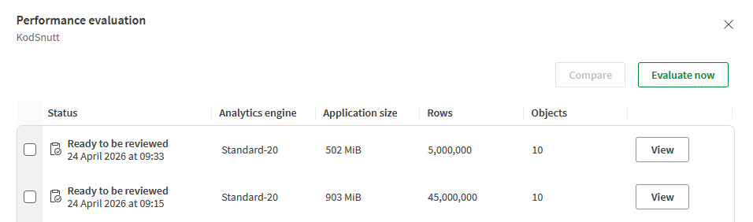
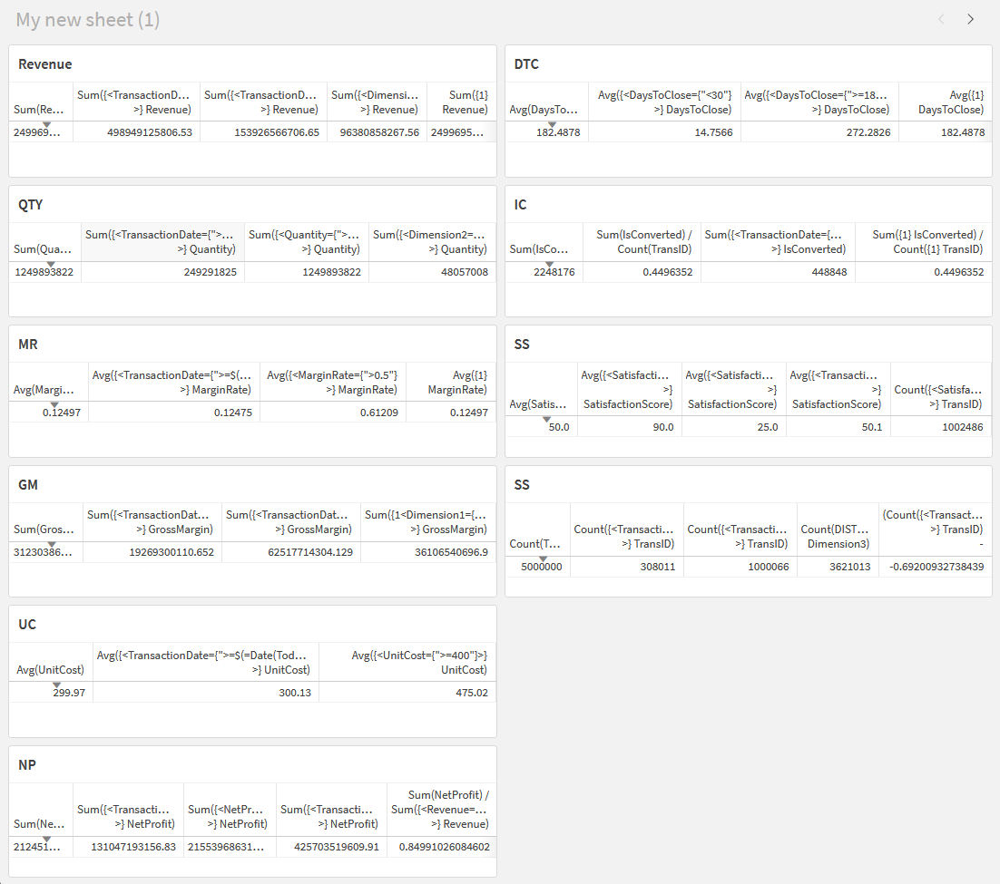
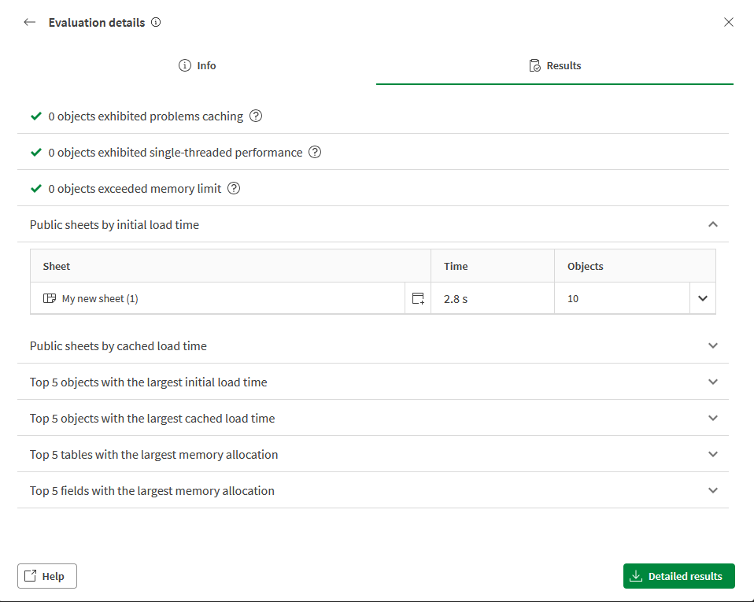

In Power BI, the standard advice for performance is to unpivot your fact table — one
MeasureName column and one MeasureValue column, making the table very
tall and narrow rather than wide. I wanted to test whether that advice translates to Qlik, so I
ran both models against the same 5 million rows and measured actual sheet load times.
The two models
The wide table is the natural Qlik structure: one column per measure, 5 million rows. In this test that produced a 502 MiB app with 10 objects on the sheet.
The cross table (Qlik's term for an unpivoted fact table) uses the
CROSSTABLE prefix to pivot all measure columns into two fields —
MeasureName and MeasureValue. With 9 measures and 5 million source rows,
this produced 45 million rows and a 903 MiB app — nearly twice the storage footprint.

The data was generated entirely in script — no source file needed. The wide table is a straight
AutoGenerate with randomised dimensions and measures:
SET vRecordCount = 5000000;
Transactions:
Load
IterNo() as TransLineID,
RecNo() as TransID,
mod(RecNo(),26)+1 as Number,
chr(Floor(26*Rand())+65) as Dimension1,
chr(Floor(26*Rand())+97) as Dimension2,
chr(Floor(26*Rand())+pick(round(rand())+1,65,97))
&chr(Floor(26*Rand())+pick(round(rand())+1,65,97))
&chr(Floor(26*Rand())+pick(round(rand())+1,65,97))
&chr(Floor(26*Rand())+pick(round(rand())+1,65,97)) as Dimension3,
Hash128(Rand()) as Dimension4,
Date(Floor(Today()-Rand()*365*5)) as TransactionDate,
round(1000000*Rand(),0.01) as Revenue,
Round(1000*Rand()*Rand()) as Quantity,
Round(Rand()*Rand()*Rand(),0.00001) as MarginRate,
round(1000000*Rand(),0.01)
* Round(Rand()*Rand()*Rand(),0.00001) as GrossMargin,
Round(Rand()*500 + 50, 0.01) as UnitCost,
Round((1000000*Rand()) - (Rand()*500 + 50)
* Round(1000*Rand()*Rand()), 0.01) as NetProfit,
Round(Rand() * 365) as DaysToClose,
If(Round(Rand()*10) > 5, 1, 0) as IsConverted,
Round(Rand() * 100, 0.1) as SatisfactionScore
Autogenerate $(vRecordCount);
For the cross table app, you can't apply CROSSTABLE directly to an
AutoGenerate — the prefix works by reading column headers from a source, which
AutoGenerate doesn't produce. The clean approach is to generate the wide table first, then
derive the cross table from it with a RESIDENT load:
// Step 1 — generate the wide table exactly as above
// Step 2 — unpivot it into MeasureName / MeasureValue
CROSSTABLE(MeasureName, MeasureValue, 6)
Transactions_Cross:
LOAD
TransID,
TransactionDate,
Dimension1,
Dimension2,
Dimension3,
Dimension4,
Revenue,
Quantity,
MarginRate,
GrossMargin,
UnitCost,
NetProfit,
DaysToClose,
IsConverted,
SatisfactionScore
RESIDENT Transactions;
DROP TABLE Transactions;
The number 6 tells Qlik how many leading columns to keep as plain dimensions —
TransID, TransactionDate, and the four Dimension fields. Everything after that gets pivoted
into MeasureName / MeasureValue pairs, turning 5 million rows
into 45 million.
How set analysis was used
To make the test meaningful, the sheet was not just a plain sum per measure. It was organised into one table per measure group, each table showing the same metric through several set analysis lenses side by side. The goal was to stress-test how both models handle complex expressions, not just simple aggregations.
Here is what each measure group demonstrated:
-
Revenue — five variants: plain
Sum(Revenue), a rolling 365-day filter using a dynamic date expression, a current-year filter usingYearStart(Today()), a hard dimension filter lockingDimension1={'A'}, and{1}to ignore all selections and always return the full dataset total. -
Quantity (QTY) — same time-filter pattern, plus a value-range filter
excluding zero-quantity rows with
Quantity={">0"}and a dimension filter onDimension2={'a'}. -
Margin Rate (MR) — demonstrated averaging with set analysis rather than
summing, including a threshold filter keeping only rows where
MarginRate > 0.5, which nearly quintupled the average from 0.12 to 0.61 — exactly as expected. -
Gross Margin (GM) — introduced the prior-year pattern using
YearStartandYearEndonToday()-365, alongside the{1<Dimension1={...}>}pattern that overrides all current selections except the one you explicitly define. -
Unit Cost (UC) and Net Profit (NP) — showed how the same date-range and
value-threshold patterns apply equally to
AvgandSumaggregations. NP also added a ratio measure — Net Profit divided by Revenue — combining two separate set analysis expressions in a single formula. -
Days to Close (DTC) — split the population into fast deals
(
<30days) and slow deals (>=180days), making it easy to compare the two segments side by side without any filter pane selections. -
Is Converted (IC) — showed both the raw count and the conversion rate as a
ratio, with a
{1}benchmark column so the current-selection rate could always be compared against the full-population baseline. -
Satisfaction Score (SS) — used threshold filters for high
(
>= 80) and low (< 50) scores, plus a count of high-satisfaction transactions — showing that set analysis works equally well insideCount()as insideAvg()orSum().
Set analysis in the cross table model
In the wide table, a filtered Revenue measure looks like this:
Sum({<TransactionDate={">=$(=Date(Today()-365))"}>} Revenue)
In the cross table, all numeric values share a single MeasureValue field, so you
must always filter by MeasureName first:
Sum({<MeasureName={'Revenue'}, TransactionDate={">=$(=Date(Today()-365))"}>} MeasureValue)
The pattern holds for every aggregation — just prepend the MeasureName filter.
The expressions are slightly more verbose, but structurally identical. The cross table sheet
showed the same values as the wide table in every column.

The performance results
Both apps were evaluated using Qlik's built-in Performance Advisor on a Standard-20 engine. Initial sheet load time with 10 objects:
| Model | App size | Rows | Initial load |
|---|---|---|---|
| Wide table | 502 MiB | 5,000,000 | 2.8 s |
| Cross table | 903 MiB | 45,000,000 | 5.2 s |
The wide table is smaller, holds fewer rows, and renders the sheet 46% faster. The cross table costs nearly twice the RAM and is significantly slower despite the engine having fewer distinct measure columns to navigate. Both apps were flagged clean: zero caching problems, zero single-threaded performance issues, zero memory limit violations.

Verdict
The Power BI best practice of unpivoting your fact table does not translate to Qlik. The cross table model is heavier on RAM, slower to render, and harder to write expressions for — all without any compensating benefit on the Qlik engine. The wide table wins on every dimension: smaller app, faster sheet, simpler formulas.
The result makes sense once you understand that the two engines have fundamentally different architectures. VertiPaq and DAX are designed around filter context and column compression in ways that favour a single dense value column. Qlik's associative engine is designed around per-field resolution, which makes dedicated columns per measure the natural and faster choice. Same problem, different engines, opposite answers.